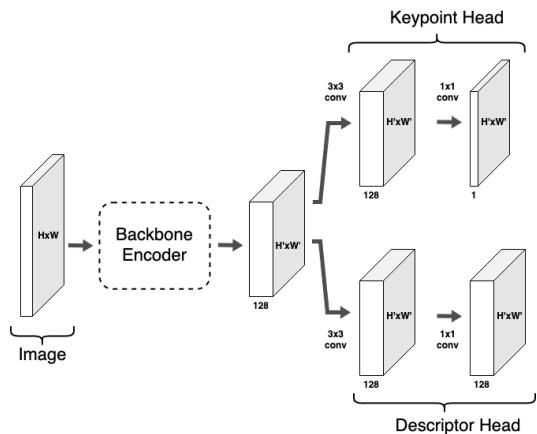
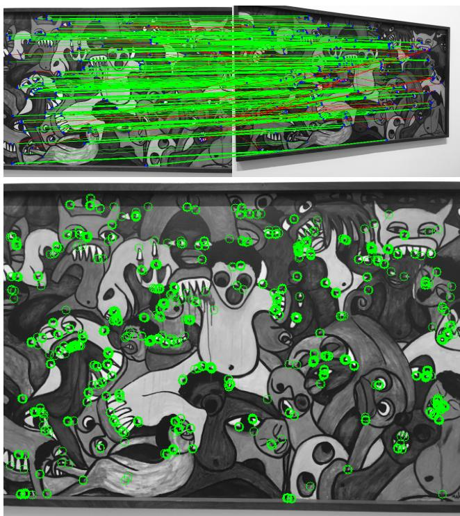
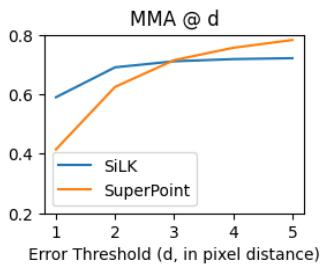

阶段 G · 学习式方法 / Lesson 0133
SiLK 2023 · 极简前端与匹配块小结
把「检测器+描述子」做回极简：两卷积 + 余弦相似度 + 互近邻，照样能赢 —— 复杂度不是越多越好 🪶
🎯 主题：极简 detect-and-describe 前端
👥 作者：Meta / 牛津等（Tiny 等）
📅 2023 · SiLK: Simple Learned Keypoints
本节目标
读完你应该能：① 说出 SiLK 与 SuperGlue/LoFTR/LightGlue 的本质归类区别；② 用生活类比解释「double-softmax 的往返一致性」；③ 讲清「极简前端 + 简单匹配」为何也能赢，收束整个匹配块。
和前面课程怎么接
它与 0129–0131 同属本季匹配块，但位置不同 ：SuperGlue/LoFTR/LightGlue 是中间端（middle-end） ，吃前端产物、吐匹配；SiLK 是前端（front-end） ，自己干「检测+描述」，匹配只靠余弦相似度 + 互近邻（MNN）。它替换的是 SuperPoint 那类前端 ，而非 SuperGlue 那类匹配器。这也呼应 第四季 0084 FAST-LIO2「干脆不提取特征」 的极简思路——视觉侧与激光侧的「少即是多」遥相呼应。
⚠️ 先纠正一个归类（本季硬要求）： SiLK 被排进「特征匹配子块」，但它不是匹配中间端 ，而是「检测器+描述子」前端 （detect-and-describe）。SuperGlue / LoFTR / LightGlue 三篇才是 middle-end；RAFT 则是稠密光流。SiLK 自己不做 SuperGlue 那套注意力/最优传输，匹配只用余弦相似度 + 互近邻（MNN） 。这正是本季「复杂与极简之争」的收束论点：「极简前端 + 简单匹配」也能赢，复杂度不是越多越好 。
1. 它到底在做什么：先讲人话
前面三节（SuperGlue / LoFTR / LightGlue）一个比一个复杂：图神经网络、Transformer、最优传输、自适应停止……给人的感觉是「匹配太难，必须上重武器」。SiLK 偏要唱反调：匹配这件事，也许根本不需要那么重 。它把「检测器+描述子」做回一个极简模块——一个轻量骨干网络，直接吐出「哪里是点」和「每个点的描述子」，然后匹配就用一个最朴素的规则：描述子余弦相似度最高、且彼此互为最近邻的，就是一对 。
2. SiLK 是「前端」不是「中间端」
SLAM 流水线里，「前端」负责从原始图像产生「点 + 描述子」，「中间端」负责把这些点两两配对。SiLK 干的是前者。下面这张图把它的位置标清楚。
SiLK 坐在「前端」：它产点+描述子，不负责配对
相机
前端 SiLK
检测 + 描述
中间端（匹配）
SuperGlue/LoFTR/LightGlue
后端 BA
位姿 / 地图
SiLK 在这里（前端）
SuperGlue 系在这里（中间端）
注意：LoFTR 虽「不用检测器」，但它仍是吃特征、吐匹配的「中间端」；SiLK 才是真正产点的前端
这张图在画什么： 相机 → 前端 SiLK（产「点+描述子」）→ 中间端 SuperGlue/LoFTR/LightGlue（产「匹配」）→ 后端 BA。红蓝括号把 SiLK 和 SuperGlue 系分到不同段落：SiLK 是前端，不在中间端 。怎么看这张图： ① SiLK 的输出是「一堆带描述子的点」，和 SuperPoint 的输出是同一类东西——它替换的是前端，不是匹配器。② 下面那句提醒很重要：LoFTR 去掉了「检测」这一步，但它依然消费特征、吐出匹配，所以归在中间端；别因为它「不用检测器」就和 SiLK 混为一谈。要记住的一句话： SiLK 解决的是「怎么从图里挑点并描述」，不是「怎么把两图的点配对」——这是它和本块其他三篇的根本分界。
3. 极简架构与 double-softmax
SiLK 沿用了 SuperPoint 的 detect-and-describe 框架：骨干网络 → 两个头（关键点 logits、稠密描述子图）。它的两个「极简」巧思：① 关键点概率等效于 cell 大小 N=1 的 cell-based 方法，于是 softmax 退化成 sigmoid ，省掉稀疏约束和 NMS；② 匹配概率用 double-softmax 的往返一致性 来定义「好点」。
double-softmax：去得动、回得来，才算好匹配
点 i（图A）
点 j（图B）
正向 P i→j（行 softmax）
反向 P j→i（列 softmax）
P_ij = P_i→j · P_j→i
往返都最高 → 高置信
不靠注意力、不靠最优传输——只用「互为最近邻」就筛出可靠匹配
这张图在画什么： 图 A 的点 i 去图 B 找最像的点（正向，行 softmax 得 P_i→j），图 B 的点 j 反过来去图 A 找最像的点（反向，列 softmax 得 P_j→i）。只有「i 选了 j、且 j 也选了 i」的往返一致对，乘积 P_ij 才高，被认定为可靠匹配。怎么看这张图： ① 这其实就是「互近邻（MNN）」的可微写法——双向都投缘才算数。② 它完全不需要 SuperGlue 的注意力上下文或最优传输，靠「往返一致性」这一个极简原则 就筛出了可靠匹配。要记住的一句话： SiLK 把「好匹配」定义成「去得动、回得来」——这是它极简却有效的核心。
这句话在说什么： 相似度矩阵 $S$ 里，$P_{i\to j}$ 是「在 i 这一行里 j 排第几」，$P_{j\to i}$ 是「在 j 这一列里 i 排第几」；两者相乘才是最终置信度。只有双向都靠前，乘积才高。（注：原文 §3.3 公式误写成 $P_{ij}=P_{ij}P_{ij}$，应为 $P_{ij}=P_{i\to j}\cdot P_{j\to i}$，已按正确形式写出；另处温度 "2 0^{-1}" 应为 "2.0^{-1}"，即相似度除以 2。）
3.1 训练：用「往返」当监督，不用 3D / 位姿
SiLK 的自监督目标非常优雅：对单张图施加一个随机（线性）单应变换得到另一视图，要求「点 i 在变换后还能被找回来」。描述子损失就是往返负对数似然：
这句话在说什么： 「好关键点」被定义成「能在匹配算法里可靠地被往返找回来的点」。于是用一个自监督目标 就同时学好了描述子和检测，既不需要 3D、也不需要位姿监督，更不需要上下文聚合（CA）。

原图注（Fig. 3）： Architecture for SiLK.怎么看这张图： 骨干网络后面跟两个头——关键点 logits 头和稠密描述子头。注意它没有 SuperGlue 那种注意力/最优传输模块，也没有 LoFTR 的 Transformer；结构极简，这正是它「极简前端」名字的由来。
4. 实验：极简也能打
SiLK 最「反直觉」的地方在于：它不用上下文聚合，却在不少基准上和 heavy 方法持平甚至更好。
测试
SiLK
对照
IMC 2022 mAA（private/public） 0.685 / 0.684 SuperGlue 0.676/0.678；LoFTR 0.735/0.721 ScanNet 位姿 AUC@20° 50.4（SiLK+MNN） SuperGlue 51.8（无 CA 仍略高） 超轻量（VGGnp-µ） 76k 参数 · 36.5 FPS · 23 GFLOP heavy 方法通常数百万～上千万参数 训练耗时 82×82 图仅 1.7 小时 SuperGlue 约 7 天；LightGlue 2 GPU-day
作者自己的结论（Table 1 与 SuperGlue/LoFTR 并列）： 「这些任务未必需要上下文聚合（CA）」。这直接挑战了 0129 那句「上下文比匹配求解本身更关键」——SiLK 用证据说明：对很多任务，去掉 CA 只是小幅度掉点，却换来数量级的轻量 。代价是：在需要大感受野的难场景（如 ScanNet 大视角），它仍略逊于 LoFTR。

原图注（Fig. 1）： The top image is an example of keypoint matching under viewpoint change; correct matches are green, incorrect ones are red. The bottom image shows keypoints which are cycle-consistent by SiLK. SiLK has learned to find distinctive geometric features (corners, curves, intersections) from single non-annotated images.怎么看这张图： 上排是视角变化下的匹配（绿对/红错），下排是 SiLK 学到的「往返一致」关键点——它从单张无标注图像就学会了挑角点、曲线、交点这些有判别力的几何特征。这正是 double-softmax 往返一致性在可视化上的体现。

原图注（Fig. 4）： The pixel-accurate contrastive loss results in very discriminative local features, thus reshaping the error distribution to make fewer local errors (MMA@1). This differs from interpolated, cell-based descriptors used in SuperPoint, which produces less accurate keypoints (MMA@3+).怎么看这张图： SiLK 的像素级对比损失让局部特征更有判别力，错误分布更集中（MMA@1 更好）；而 SuperPoint 的 cell-based 插值描述子精度略低（MMA@3+）。这是它「极简但不糊」的底层原因。
5. 匹配块小结：0129–0133 我们学到了什么
读到这里，本季「特征匹配子块」五篇都读完了。把它们放在一条「复杂度轴」上，能看清全貌。
匹配块五篇的「复杂度轴」：从极简前端到重中间端
极简
复杂
SiLK (0133)
前端·余弦+MNN
SuperPoint
前端（被替换对象）
SuperGlue (0129)
GNN+最优传输
LoFTR (0130)
去检测+Transformer
LightGlue (0131)
自适应+门控
RAFT (0132)
稠密光流·另一范式
← 往下减（极简）这一端
往上加（复杂）这一端 →
RAFT 不在同一轴：它是逐像素稠密对应，不是「挑点配对」范式
这张图在画什么： 把匹配块五篇按「复杂度」排成一条轴——左端是 SiLK（极简前端：余弦+MNN），中间是 SuperGlue（重中间端），右端是 LightGlue（最精致的重中间端）；RAFT 因为范式不同（稠密光流），单独放在轴下方，用虚线连着表示它不属于「挑点配对」这条轴。怎么看这张图： ① 0129–0131 在轴右端「往上加复杂度」，0133 SiLK + 0132 RAFT 在「往下减」。② 关键结论：复杂度不是越多越好 ——SiLK 用极简前端在 IMC2022 持平 SuperGlue、训练快几千倍；RAFT 用「相关体+循环」这种极简机制拿下稠密对应。③ 它们各有主场：难纹理/大视角下 heavy 方法仍更好，但「轻量够用」是真实存在的选项。要记住的一句话： 整个匹配块收束成一句话——「复杂度」和「效果」不是单调关系，选多重取决于你的速度与精度预算 。
0129 SuperGlue
中间端开山：GNN + 最优传输 + dustbin + Sinkhorn。贡献是「上下文」与「部分指派」。代价：二次复杂度、依赖前端。
0130 LoFTR
去掉检测器：1/8 稠密 + Transformer 全局感受野 + coarse-to-fine。专治纹理缺失。dual-softmax 替代 OT。
0131 LightGlue
SuperGlue 轻量重构：解耦 matchability + 深度自适应 + point pruning。更快更准更易训，落在「该省就省」一端。
0132 RAFT
稠密光流（非稀疏匹配）：4D 相关体 + 循环 GRU 迭代。证明「极简机制反复迭代」也能拿 SOTA。是 DROID-SLAM 的祖先。
0133 SiLK
极简前端：detect-and-describe，余弦+MNN，无 CA。轻量到 76k 参数。证明「这些任务未必需要上下文聚合」。
三条收束结论
① 匹配被「吃掉」了（0011 兑现）；② 复杂度非单调；③ SiLK 是前端、RAFT 是稠密光流——别被「匹配块」这个筐带偏。
互动判断
关于 SiLK 的归类，下面哪种说法最准确？
SiLK 是前端，匹配只用余弦相似度 + MNN
SiLK 和 SuperGlue 一样是带最优传输的中间端
5.1 和前面课程怎么接（收束）
本块五篇是第一季 0011 那句「深度学习先吃掉匹配」的第一个重头证据 ：匹配这个环节确确实实被吃掉了，而且吃法不止一种——可以是 SuperGlue 的重武器，也可以是 SiLK 的极简前端。同时，它们也回应了第一季 0004 的手工特征匹配与数据关联 ，以及第四季 0084 FAST-LIO2「干脆不提取特征」 ：激光侧用「直接配准」省掉特征，视觉侧用 LoFTR/SiLK 省掉/简化检测，是同一「少即是多」思路在两个传感器上的回响。下一节（0134）我们要离开匹配，进入 0011 那句话的第二个战场——检索与回环 。
用生活类比解释 SiLK 的 double-softmax「往返一致性」。
展开查看答案
像两个人互发好友申请：A 把 B 加为「最想联系的人」，同时 B 也把 A 加为「最想联系的人」，才算真朋友（高置信匹配）；如果只有单向，就把他晾在一边。SiLK 用「行 softmax × 列 softmax」把这种「互选」变成可微的置信度，不靠注意力也不靠最优传输。
为什么说 SiLK 是对 0129 那句「上下文比匹配求解本身更关键」的挑战？
展开查看答案
SuperGlue 的消融结论是「去掉 GNN（上下文）精度暴跌，说明上下文最关键」。SiLK 反其道而行：它显式声明不用上下文聚合（CA） ，却在 IMC2022 与 SuperGlue 持平、训练快几千倍。作者据此认为「这些任务未必需要 CA」。这并不推翻 SuperGlue 在难场景下的优势，但说明「上下文」对很多任务是锦上添花而非必需 ——复杂度与效果非单调。
SiLK 和 SuperPoint 是什么关系？它替换的是流水线的哪一段？
展开查看答案
SiLK 和 SuperPoint 是同类 ——都是 detect-and-describe 前端，产出「点 + 描述子」。SiLK 替换的是 SuperPoint 那类前端，而不是 SuperGlue 那类匹配器。它的极简之处在于：cell 大小退化成 1（softmax 变 sigmoid，去掉 NMS 与稀疏约束），且自监督训练只需单图 + 随机单应，无需 3D/位姿。
把 0129–0133 五篇放进「复杂度轴」，你的收束判断是什么？
展开查看答案
五篇里 0129–0131 在轴右端「往上加复杂度」（GNN/Transformer/自适应），0133 SiLK + 0132 RAFT 在「往下减」。收束判断：复杂度与效果不是单调关系 ——heavy 方法在难纹理/大视角仍更好，但极简方案在「轻量、快、易训」上优势巨大，且精度往往够用。选多重，取决于速度/精度预算。另需牢记两条归类：SiLK 是前端、RAFT 是稠密光流，都不在「稀疏匹配中间端」那一格。